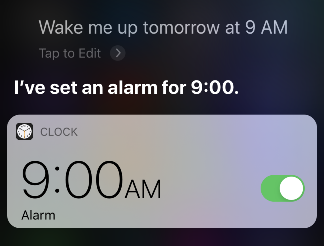

Fundamental Principles of Interaction
- Affordance
- Communicates how the object could possibly be used.
- example: jar of milk and cup
-
the curved handle by the side of the glass jar indicates that a hand
may possibly fit in and act as a grabbing tool. the opening at the
top of the jar also indicates that liquid can be poured in or out,
especially through the raised beak-like part of the opening.
The opened top of the cup shows that liquid can also be poured in
and out of it as well. This is a good indicator of affordance.
- Signifiers
-
Any mark, sound, or perceivable indicator that communicates where the
action should or could take place.
-
example: push pull sign, alarm on/off icon, volume
increasing/decreasing sound
-
The sliding button on the right side of the alarm
indicates whether the alarm is turned on or off. In this case, the
green mark on the sliding icon shows that that alarm will ring at
9:00AM in the next morning.
- Mappings
- The relationship between the elements of two sets of things.
-
are cultural(red=hot, blue=cold) and physical (game controller,
sterring wheel)
- example: light switches, stove, key holes
-
the light switches fail to have good mapping, since all the switches
are in a straight line, without much indication to which switch
turns on/off which lightbulb in the ceiling or in the room. Turning
off or on unwanted lights is a frequent experience people happen to
have.
- Feedback
- Communicating the results of an action to a user
-
Keeping user informed of the events happening behind the scenes(that
something is going on) and their input has been received
- example: crosswalk button, buffering signal on screen,
-
The message that has been written and pressed sent button is
outgoing and being dilivered in this screenshot. The blue bar is
going forth from the left to right, giving feedback the the message
is being sent to the other person to whom this message is directed
towards.
- Conceptual Model
- Highly simplified explanation of how something works.
-
Design must fit the conceptual model of the user, has to meet an
appropriate expectation of the user(mental model)
- example: home thermostat vs car thermostat, Norman's Fridge
-
The children's book's conceptual model may be just to provide a
display of a phone dial, and make the child be more used to the dial
pad. However, when an adult sees and interacts with children's book,
following the directions "call 907," nothing will happen even when
he or she does dial the numbers 9, 0, and 7. So this mental model of
the book like an actual phone pad does not fit the conceptual model
of the publication of the children's book.